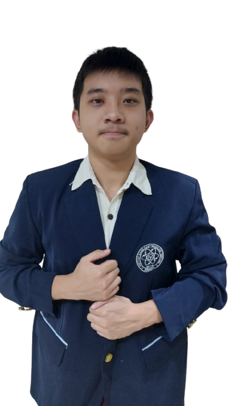

~~Tentang Nicholas~~
Background
Nicholas merupakan seorang mahasiswa aktif di Institut Sains dan Teknologi Terpadu Surabaya (ISTTS) yang saat ini berada pada semester kedua, dengan program studi Sistem Informasi Bisnis. Ia diketahui mulai menempuh pendidikan tinggi pada tahun 2025. Latar belakangnya sebagai individu yang lahir pada bulan Juni tahun 2007 menunjukkan bahwa ia termasuk dalam generasi muda yang sedang berada pada fase produktif untuk mengembangkan potensi diri secara maksimal. Dalam kesehariannya sebagai mahasiswa, Nicholas dikenal sebagai pribadi yang memiliki tingkat kedisiplinan dan konsistensi yang tinggi, khususnya dalam mengikuti seluruh kegiatan perkuliahan yang diselenggarakan pada semester berjalan.
Passion
Dalam hal minat dan passion.....
Nicholas memiliki ketertarikan yang besar terhadap pengembangan
teknologi, khususnya dalam bidang pembuatan dan pengembangan
website. Ketertarikan ini tidak terlepas dari keinginannya untuk
memberikan kontribusi nyata terhadap usaha yang dimiliki oleh
orang tuanya. Ia memandang bahwa kemampuan dalam membangun dan
mengelola website dapat menjadi salah satu strategi efektif
untuk meningkatkan daya saing dan jangkauan bisnis di era
digital saat ini.

Nicholas Dave S (225180603)
🔑~~VISION~~
"Menjadi narator visual terkemuka yang mampu mengubah setiap momen menjadi karya seni bermakna dan abadi."
📌~~MISSION~~
- Memberikan layanan dengan standar kualitas teknis tinggi dan profesionalisme yang konsisten.
- Mengembangkan inovasi storytelling melalui integrasi elemen multimedia seperti audio dan video.
- Membangun hubungan yang autentik dengan klien untuk menghasilkan karya yang natural dan bermakna.
- Menciptakan karya visual yang bernilai jangka panjang sebagai warisan bagi generasi mendatang.